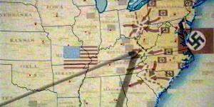

|
 |
 |
077 - Storm Front - Part I
|
 |
| SEQ |
77 |
| UPN |
08.10.2004 |
| CJ |
26.12.2005 |
| STO |
Manny Coto |
| REG |
Allan Kroeker |
| MUS |
Jay Chattaway |
| GUS |
Daniels |
Matt Winston |
|
Silik |
John Fleck |
| |
Alicia Silvers |
Golden Brooks |
| |
Sal |
Joe Maruzzo |
| |
Vosk |
Jack Gwaltney |
| |
Ghrath |
Tom Wright |
| |
Joe Prazki |
John Harnagel |
| |
Carmine |
Steven R. Schirripa |
| |
Generale tedesco |
Christopher Neame |
| |
Soldato nazista |
Sonny Surowiec |
| |
Dottore |
Günther Ziegler |
| |
Ufficiale |
J. Paul Boehmer |
| IT |
Nuovo fronte temporale - Prima parte |
| STIC |
Il fronte della tempesta - Prima parte |
| RIP |
Dal 15 al 23 luglio 2004, un'esterna girata il
29 luglio |
1944: Archer e l'Enterprise si ritrovano intrappolati nel
passato della Terra all'epoca della Seconda
Guerra Mondiale e scoprono che gli eventi sono stati modificati da Vosk, un
estremista di una fazione che combatte la Guerra Fredda Temporale.
- All'inizio c'è un breve riassunto dei fatti precedenti con scene di
Azati Prime,
Countdown e Zero Hour.
- T'Pol deve accettare davanti all'evidenza dei fatti che i viaggi nel tempo
sono una realtà.
- Scopriamo che Vosk è membro di una fazione che non ha accettato gli
Accordi Temporali e che usa un sistema occultato di viaggio nel tempo.
- Un pod viene attaccato da uno stormo di aerei P-51.
- Tucker e Reed distruggono il pod rubato precedentemente da Silik per
evitare che cada nelle mani dei Nazisti.
- Scopriamo che nel 2154
Cancun e Tahiti sono ancora due mete turistiche balneari.
- Vediamo morire Daniels per la seconda volta.
- Scopriamo che è stato Daniels ad inviare l'Enterprise nel passato
per sconfiggere la fazione di Vosk.
- Eventi del passato alternativo:
-
Quando
viene inquadrata la mappa con i territori occupati dai Nazisti si vede che questi
controllano il
New England, il New York, la Pennsylvania, il New Jersey, il Delaware, il
Maryland, la North Carolina, la parte più orientale dell'Ohio, quasi tutta la Virginia,
due terzi della South Carolina e la parte più a est del
Tennessee. A fianco è riportata la mappa che si vede nell'episodio con
sovrapposti i confini attuali degli stati americani.
-
I Nazisti hanno occupato la Russia fino a Mosca.
-
Il quartier generale nazista è all'interno della Casa Bianca, che appare
danneggiata probabilmente da un colpo di artiglieria.
-
La portaerei Enterprise è stata affondata.
-
Vosk ha allestito un laboratorio di ricerche per nuovi tipi di armi a New York
che assicurerebbero la loro vittoria finale.
- Nei titoli di testa originali non appare l'indicazione che questa sia la
prima parte.
- I membri della resistenza che catturano Archer credono che lui
faccia parte della marina e che sia stato imbarcato sulla portaerei
Enterprise, ignorando praticamente l'evidente differenza della divisa e il
fatto che la patch non mostra una nave della marina.
- Le esterne di New York sono state girate all'esterno degli studios della
Paramount.
- Alcune esterne sono state girate allo Sable Ranch di Canyon Country.
- Quando T'Pol preme il pulsante a fianco alla porta per entrare
nell'infermeria, la porta si apre prima che lei prema il pulsante [T:18:13].
- Quando si sente in sottofondo la canzone di Billie Holiday, il closed
captioning originale continua a riportare le parole della canzone anche quando
questa non si sente più.
Ufficiale nazista (ad Archer): You know, in Hollywood movies,
Americans always win. Too bad for you, you're not in a movie. [T:03:56]
Trip: This isn't a damn sensor glitch! We just pulled three
fifty-caliber bullets from the shuttlepod hull.
T'Pol: A-
Trip: And spare us the official Vulcan position about time
travel, we are 200 years in the past. Face it. [T:05:58]
Archer: Alicia... I'm gonna ask you something that's gonna sound a
little strange.
Alicia: What else is new?
Carmine: Just shut up and tell'im!
Joe Prazki: I can't talk and shut up at the same time.
Sal: Hey! You think the Germans are tough? Get me in a bad mood!